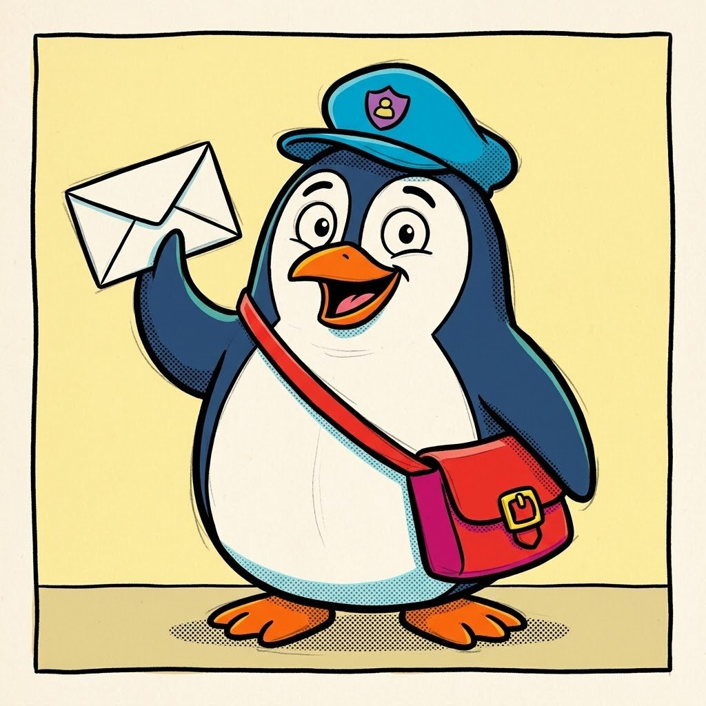

This browser is not saving your work. If you leave this page, your answers will be gone. Tell your teacher.
Got a workshop code?
You can put it in now, or later when you need the prompt helper. You do not need it to look.
How will you work? (pick one)
Which level? (pick one)
On Paws & Order Level 1: What can you see?
Name what is there. No guessing and no story yet: only what you could point at.

Watch: this is how a sharp-eyed detective of details looks at a picture.
Could this be one of the gang? (you can skip this)
Your answers build it. You can change the words yourself. It needs 10 words of your own.
0 words of your own. Write 10 more.
Still to do
- Your description has 10 words of your own (done)
Put together, the answers make a description
Short of time?
You can carry on with this one. This is a worked example, not your own words.